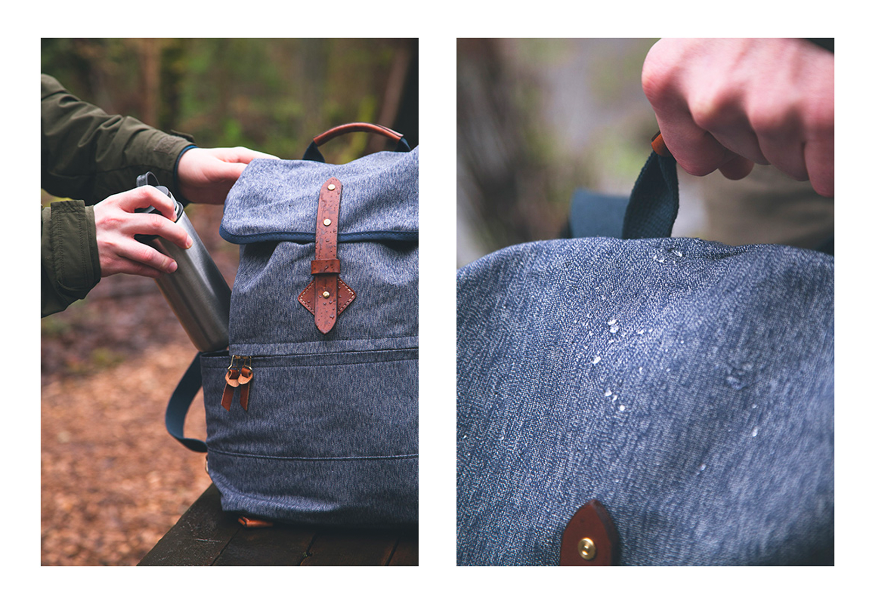
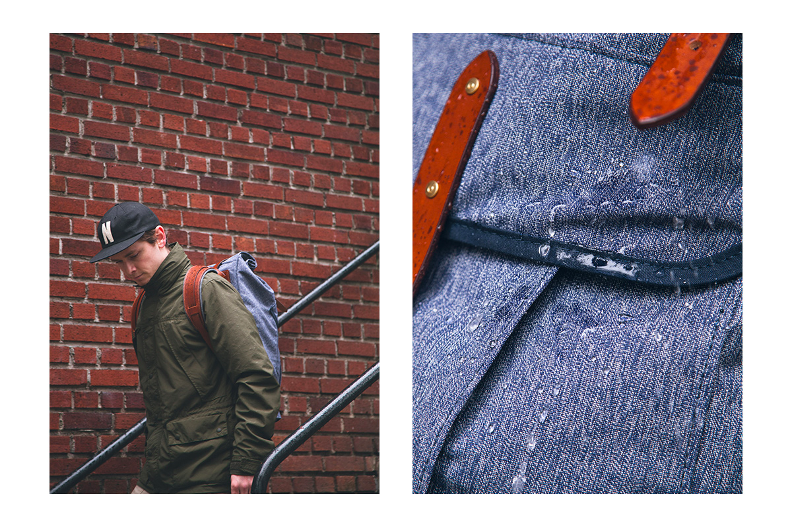
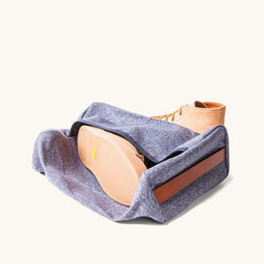
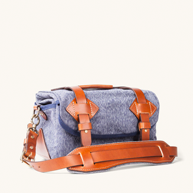
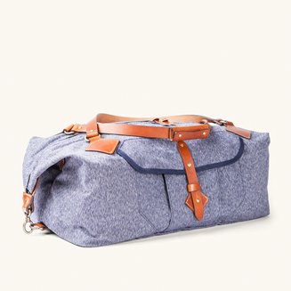
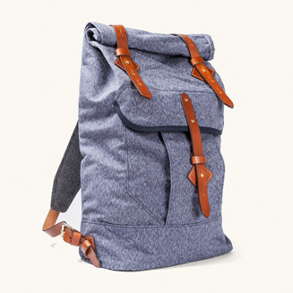
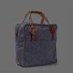
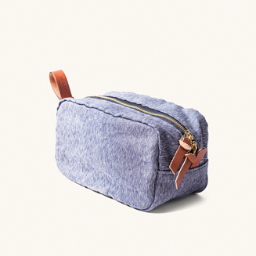

Whether you're stomping around outdoors
or traversing the city, our Voyager Daypack
was designed to be adaptable
in all environments. Compact, lightweight
and a comfortable for people of all sizes.
this silhouette is versatile enough
VOYAGER DAYPACK
NAVY SALT & PEPPER
>
NAVY SALT
Field-tested from the peaks of the Cascades down
to the desert floor of Joshua Tree, the Wilderness Rucksack was built to put on some serious miles
for years to come. A comfortable, dependable combination of 14oz Salt & Pepper canvas, premium wool felt, and Cambara English bridle leather.
DRIFTER DOPP KIT
NAVY SALT & PEPPER
TANNER COLLECTIONS
NAVY SALT & PEPPER
01

NOMAD DUFFLE
This bag can be carried by hand, worn as a backpack or slung over a shoulder depending on your traveling needs
READ MORE
SUPRUCE SALT & PEPPER
We designed our Nomad Duffle as a versatile yet
rugged piece of luggage that's just as comfortable
outdoors as it is in an overhead compartment
READ MORE
VOYAGER
VOYAGER
DAYPACK
FIELD CAMERA BAG
Our field camera bag is constructed from 14oz Salt & Pepper canvas and Cambara Meridian English bridle leather. We've put these bags through the ringer in testing and we think you'll approve of the result. Our Camera Bag is fully lined and padded, and features an adjustable shoulder strap and
READ MORE
- 
- 
- 
- 
- 
- 